Chapter 06 프로필 앱 만들기
완성 화면


주요 화면 구성
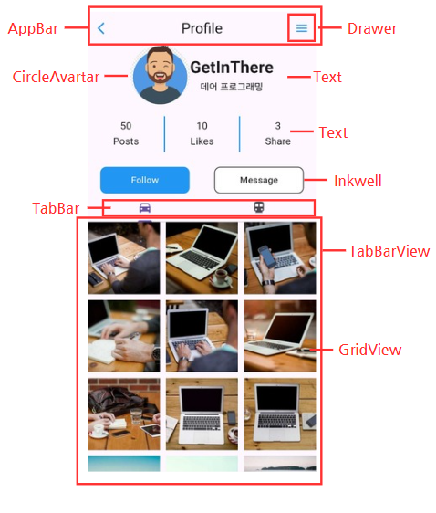
1. Drawer 위젯


Drawer 의 크기와 색상을 조정할 수 있다.
2. CircleAvartar 위젯
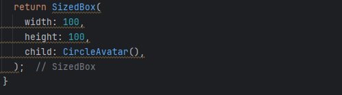
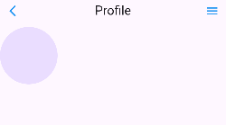
3. AssetsImage 클래스
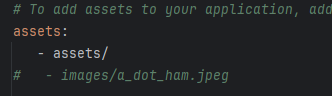
pubspec.yaml 에서 assets 경로를 설정 후 pub get을 한다.
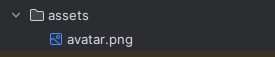
assets 폴더에 원하는 이미지, 폰트 등의 파일을 넣는다.

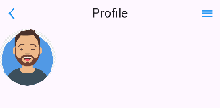
4. Inkwell 위젯
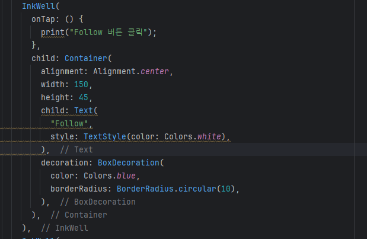
Container 위젯을 InkWell 위젯으로 감싸면 버튼 디자인을 자유롭게 만들 수 있다..
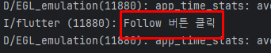
Inkwell 버튼을 누르면 OnTap 함수가 호출되면서 함수 내부가 실행된다.
5. TabBar 위젯
5.1 TabBar
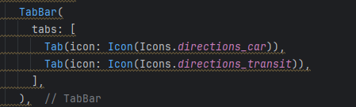
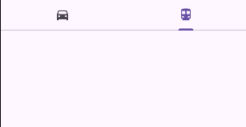
TabBar 의 tabs 속성을 활용해 각 탭을 정의할 수 있다.
5.2 TabBarView
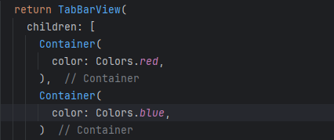
TabBarView 로 각 탭바에 대한 컨텐츠를 구성할 수 있다.
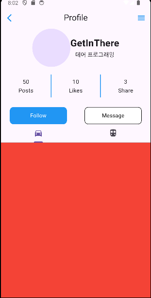
5.3 DefaultTabController
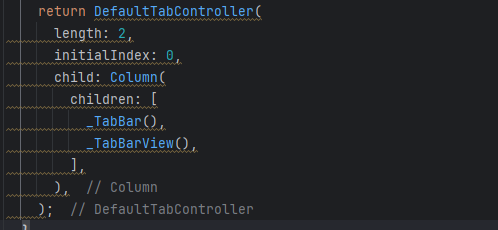
length 를 통해 탭바의 개수를 정할 수 있다. Column을 자식 위젯으로 사용해 TabBar 와 TabBarView를 쉽게 구현할 수 있다.
5.4 Horizontal viewport was given unbounded height 오류
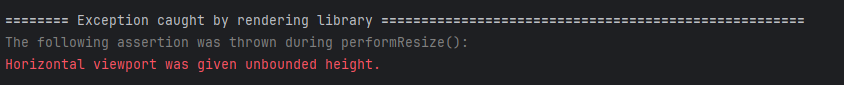
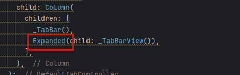
TabBarView 를 Expanded 로 감싸 남은 공간을 차지하도록 설정한다.
6. GridView 위젯
6.1 GridView
6.2 SliverGridDelegateWithFixedCrossAxisCount
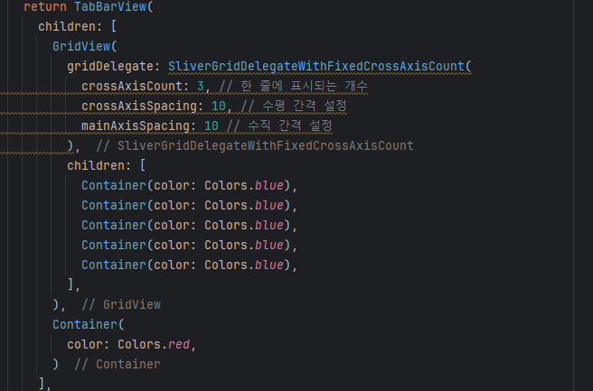
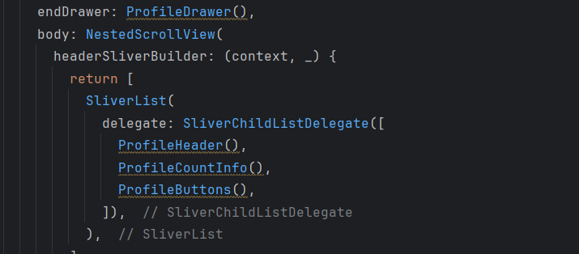
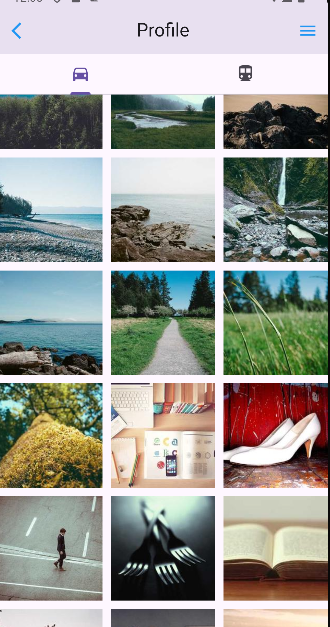
NestedScrollView 를 사용하면 탭바를 제외한 부분이 스크롤을 공유하게 되어 UX가 좋아진다.